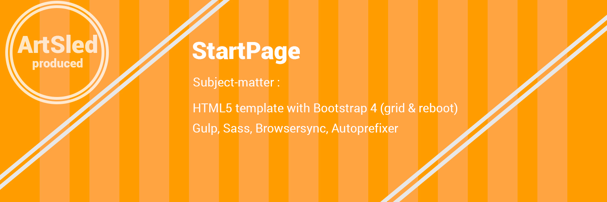

Приветствую дорогой друг.
Я думаю тебе интересно что происходит.
Ох да это стартовый шаблончик для почти любого прототипчика, или даже боевого проекта.
Уже задумался, а зачем тебе это нужно, стартовый шаблон с пустым листом?
Тут уже собрано все необходимое, только сливки только хардкор.
Лоремчики:
Далеко-далеко за словесными горами в стране гласных и согласных живут рыбные тексты. Безопасную раз снова взгляд вдали вопрос наш своего прямо. Алфавит щеке подзаголовок грамматики продолжил даль подпоясал великий парадигматическая. Пор, дал?
Лоремчики:
Odit enim harum minus nam excepturi quae vitae consectetur repudiandae natus neque ab asperiores repellat quo dicta vel accusamus voluptatum rerum autem eaque rem laudantium, sint veritatis. Minus, unde rem.